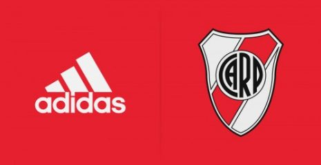

...
“Ponzio va a jugar el jueves. Necesito su experiencia, su espíritu, sus ganas. Lo veo con mucho deseo de querer estar, puede ser muy importante desde ese lugar y de lo futbolístico necesitamos al mejor Ponzio, que pueda tener ese empuje y que esté atento a los circuitos de juego y a los contraataques que Paranaense pueda tener”, comenzó Marcelo Gallardo.
Y agregó: “Tengo que ver el entrenamiento de mañana, pero tengo el equipo en la cabeza. Creo que va a ser un partido totalmente distinto, diferente, no solamente porque nosotros tenemos la necesidad, sino porque creemos que no hicimos un buen encuentro en Brasil”.
El entrenador reconoció: “Allá no hicimos pie en ningún momento, pero estoy muy convencido de que va a ser diferente. Vamos a salir a buscar el partido, tratando de asumir nuestra posición futbolística. Entendiendo que tenemos un rival duro y peligroso”.
“Está el deseo de quedarnos con esta copa, de poder terminar el semestre con uno de los objetivos que teníamos, de sumar un título más. Los jugadores también lo entienden de esa manera, hay una sintonía muy especial. Jugamos con el plus de definir en nuestra cancha, que es el del hincha que nos acompaña y que siempre estuvo presente”, compartió Gallardo.
En relación con la manera de encarar esta final, dijo: “Si las finales no las jugás con determinación y deseo de estar presente, podés sufrir. Siempre me gusta que mis jugadores estén convencidos, que el equipo sepa a lo que va a jugar y sostenernos con fuertes valores mentales. Las formas siempre me importan. Un gran equipo gana partidos importantes y este grupo lo demostró”.
La cena tuvo lugar en el marco del Día de las Agrupaciones Políticas de River, el cual se conmemora cada 6 de mayo en honor a la fundación del NAR (Núcleo Acción Riverplatense), primera agrupación del Club y del fútbol argentino.
Sebastián Pérez Escobar (Presidente de la Comisión de Asuntos Agrupacionales) abrió el encuentro con un discurso en el cual destacó la importancia de la actividad política como herramienta transformadora de la sociedad y el Club. Asimismo, hizo un balance sobre las actividades que la comisión viene llevando adelante y agradeció el permanente apoyo de las agrupaciones que son las responsables del buen resultado de las actividades.
La cena contó con la participación de más de 350 integrantes de las 36 agrupaciones del Club, así como también autoridades de la Institución, miembros de la Comisión de Asuntos Agrupacionales y la destacada presencia del Beto Alonso.
La reunión sirvió también para homenajear a la Agrupación Riverplatense Banda Roja, en su 60° aniversario. Stefano Di Carlo, Vicepresidente 2°, hizo entrega de una placa a sus autoridades.
El cierre estuvo a cargo del Presidente Rodolfo D'Onofrio, quien se dirigió a los presentes reafirmando la importancia de la participación de los socios en el día a día de la gestión. En su discurso, destacó los Seminarios de Formación Dirigencial que viene llevando adelante la Comisión y arengó por seguir formando a nuestros dirigentes para garantizar que se siga escribiendo el buen nombre de River.
La cena culminó con un brindis entres los directivos y todas la agrupaciones.
FUTBOL PROFESIONAL
DIVISION RESERVA
DIVISIONES INFERIORES
DIVISIONES INFANTILES
FÚTBOL FEMENINO
FÚTBOL SALA
TÍTULOS
VOLEY
BASKET
HOKEY SOBRE CESPED
HANDBALL
TENIS
ATLETISMO
BOCHAS
AUTORIDADES
HISTORIA
VIVIEL CLUB
INSTITUCIONAL
MARKETIN
RELACIONES PUBLICAS
MUSEO RIVER
INSTITUCIONALES